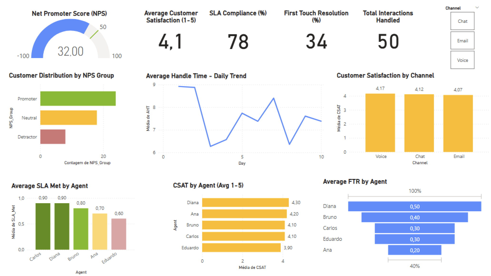

Call Center Performance – KPI Dashboard
Date: April 2025
ğŸ› ï¸ Tools Used
Power BI · DAX · Excel
🯠Project Scope & Objectives
- Monitor and visualize call center performance using realistic operational metrics
- Calculate KPIs such as NPS, CSAT, SLA Compliance, AHT, and FTR
- Provide agent-level insights for team performance analysis
- Enable filtering by contact channel (Voice, Email, Chat)
🔠Dashboard Highlights
- Interactive KPI summary with key performance scores
- Daily trend of Average Handle Time (AHT)
- Customer satisfaction breakdown by channel and agent
- NPS group distribution and agent-level SLA/FTR performance
📠Project Resources
🖼️ Dashboard Screenshots
